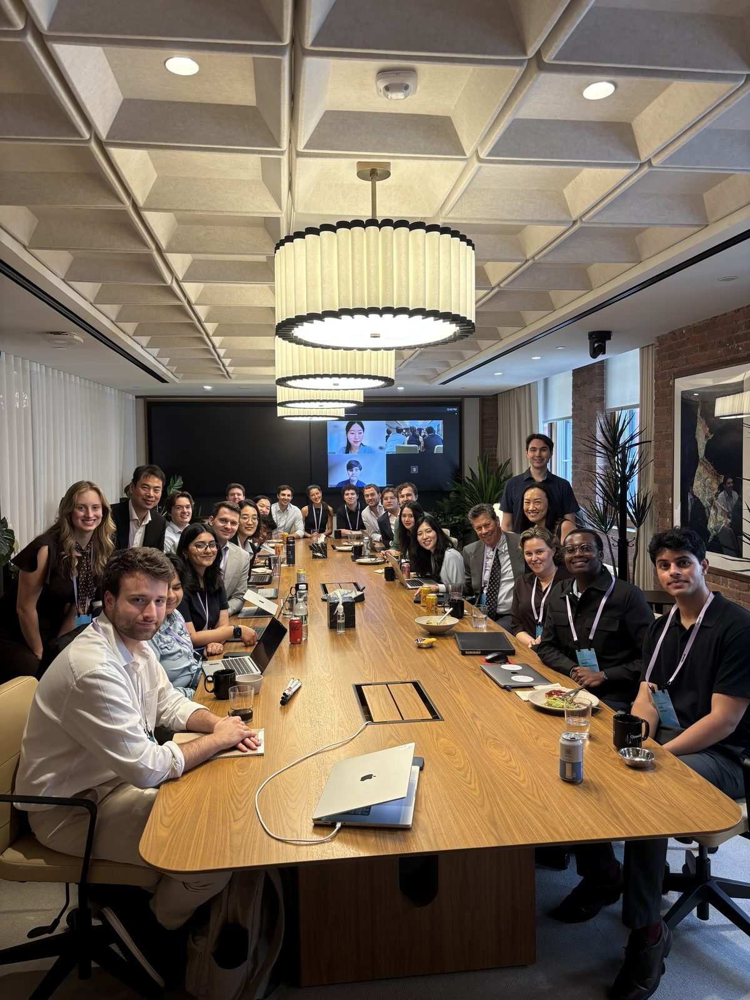
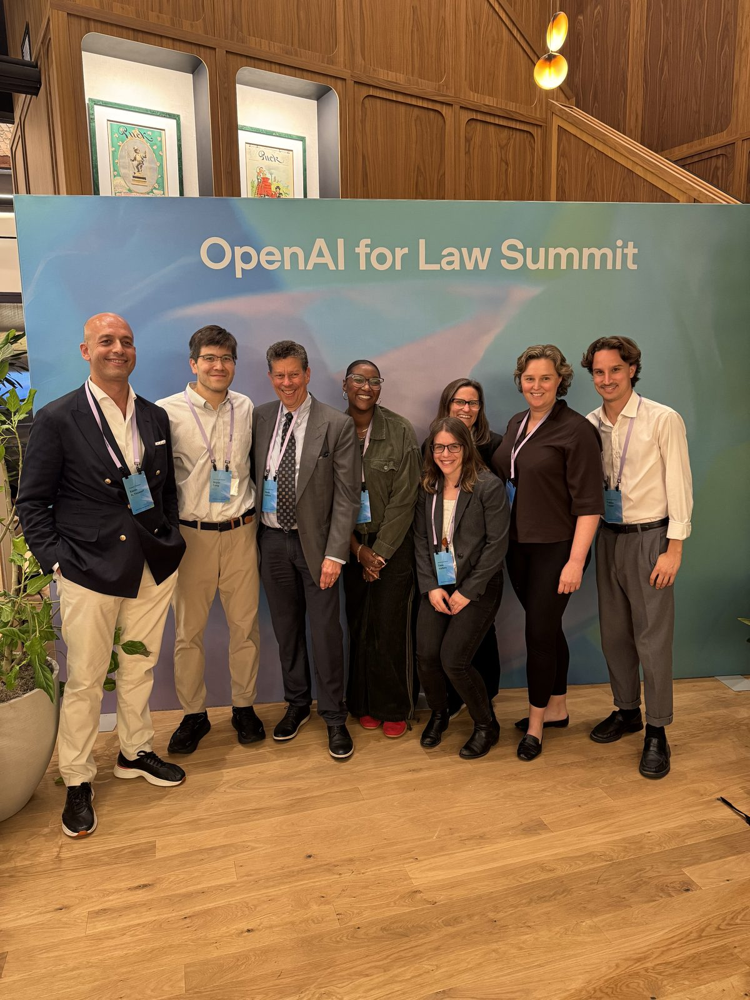
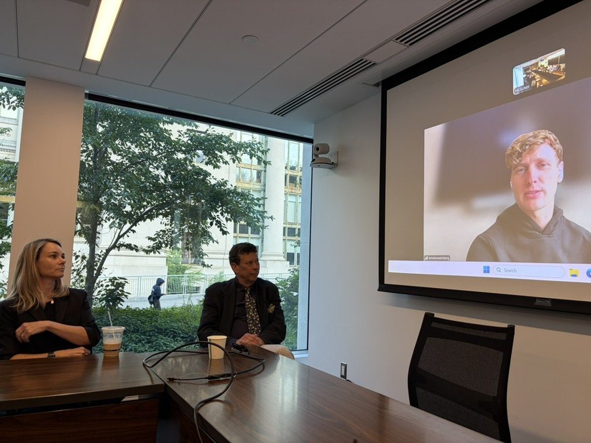
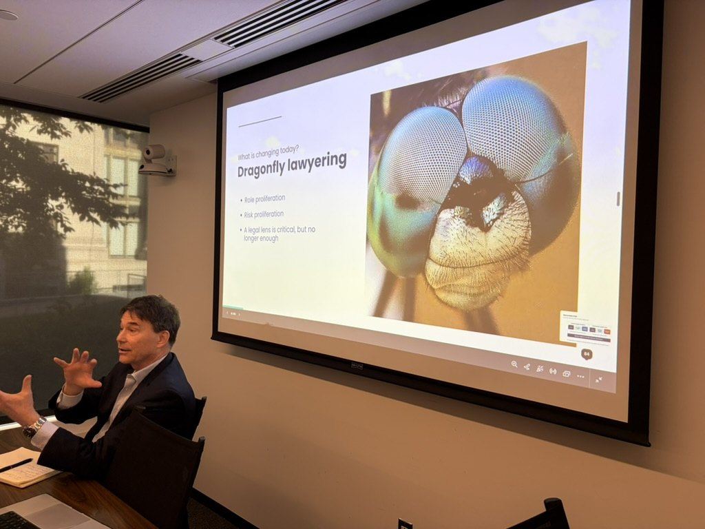

AI, Complex Decision-Making and the Future of the Legal Profession
A seminar taught by David B. Wilkins and Anthea Roberts, running 14 September to 1 October 2026. It asks what AI is doing to legal work, legal organizations and the formation of lawyers — and how anyone could know whether the leading claims are true. This series is the research program the seminar sits inside.


The course map


Students work the same record this site is built on
The seminar is taught against a live corpus rather than a reading list frozen when the syllabus was written.
Students receive access to Second Chair, the living research corpus behind this series — scholarship, primary legal materials, industry evidence and practitioner interviews, created by Anthea Roberts and David B. Wilkins as part of this project, structured and analyzed by Insight Bridge. It can be searched, compared and traced from a synthesis back to the underlying source, and connected to a compatible AI tool through its read-only MCP connector.
The course also draws on the Dragonfly field analysis — the actor map, the drivers and systems map, and the scenarios. Those are analytical interpretations of the evidence base rather than additional evidence, and students are asked to test their assumptions and causal claims against the underlying sources. Any proposition used in assessed work must still be checked against the underlying document: the corpus is research infrastructure, not an authority in its own right.
What students should be able to do
The seminar is career-facing as well as analytical: by the end, students should be equipped to evaluate not only a technology but a prospective employer’s strategy, training system, economic model and approach to professional responsibility.
- distinguish task-level capability and productivity evidence from evidence about jobs, organizations and markets;
- explain why generation and verification may move at different rates, and apply the verification-frontier framework to a legal matter;
- compare application companies, AI-native law firms, incumbent firms and AI-enabled legal departments by what they sell, what capital they require and who remains answerable;
- evaluate how AI may redistribute access to entry-level professional opportunities and access to legal assistance, without collapsing those distinct questions;
- weigh claims from scholarship, company announcements, founder interviews, benchmarks, professional rules and labor-market data according to what each source can establish;
- describe the domain depth, breadth, practical AI fluency and orchestration involved in the diamond-complete ideal of professional excellence;
- distinguish preserving junior tasks from preserving the developmental functions of apprenticeship;
- use actor maps, system-dynamics maps and scenarios to identify feedback effects, signposts and robust institutional responses; and
- develop an original, falsifiable argument using AI transparently and with source-level verification.
This page is the seminar as it sits inside the research program. Registration, prerequisites, credit and the formal requirements are held by the Law School: the Harvard Law School catalog entry ↗. The program it belongs to is the AI and the Legal Profession project ↗ at the Center on the Legal Profession.